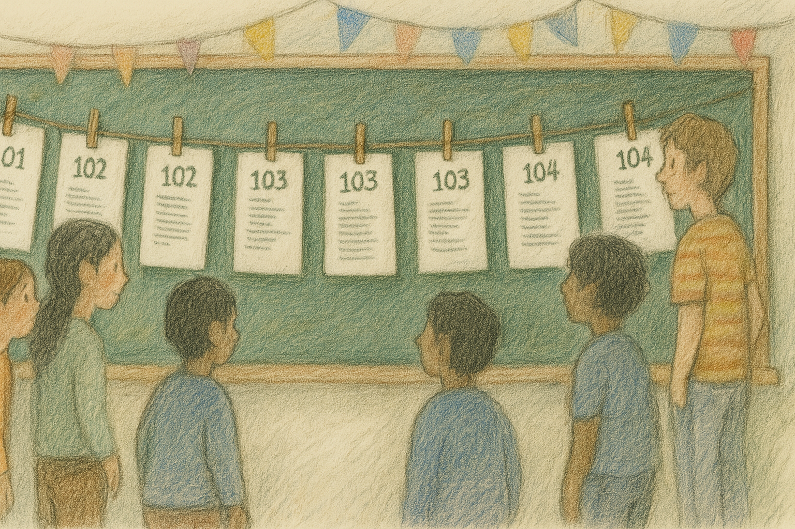
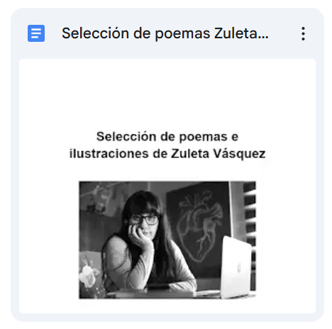
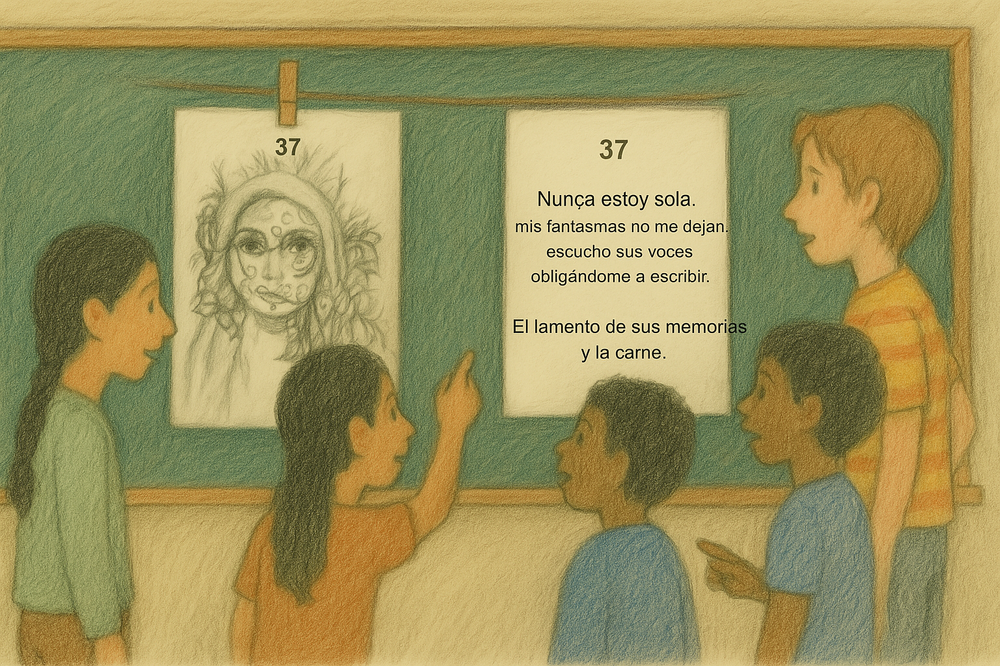
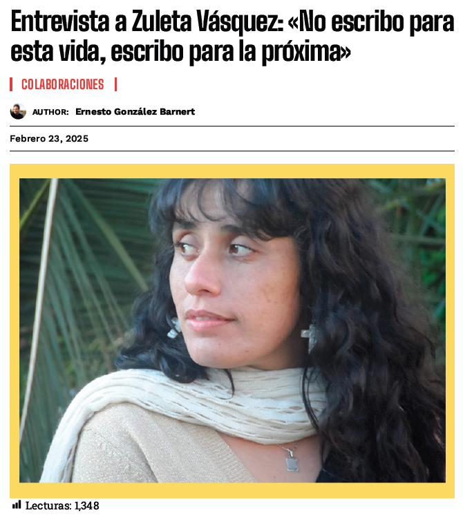

🕒 Primer bloque (40 minutos) – Lectura poética y visual de Zuleta Vásquez
Objetivo: Que los y las estudiantes se acerquen de manera emocional y estética a la obra de Zuleta Vásquez, explorando sus poemas y dibujos como formas complementarias de expresión del yo lírico. Se espera que identifiquen símbolos, metáforas y emociones tanto en las palabras como en las imágenes.

Actividades:
El o la docente dispondrá en el aula una selección de 15 poemas breves extraídos de los libros 101, 202, 301 y 401 (Editorial Pampa Negra), junto a una muestra de dibujos originales de Zuleta Vásquez.
Esta selección se encuentra disponible en un archivo PDF adjunto, listo para ser impreso. 
También está disponible en Word por si se quisiera modificar. Debe descargar antes ya que el permiso está como lector.
Se sugiere realizar un montaje visual en el aula:
- Colgar los textos e ilustraciones con pinzas de ropa sobre cuerdas distribuidas frente a la pizarra o en un espacio abierto y visible.
- Preparar previamente este montaje antes de la entrada del curso, o realizarlo junto a los estudiantes como parte del rito de inicio de la actividad.
- Los dibujos deben intercalarse con los poemas, favoreciendo asociaciones libres y visuales.

Luego, se invita a los estudiantes a recorrer libremente el espacio, observar, leer y detenerse donde algo les llame la atención. Pueden hacerlo individualmente o en pareja. Durante la lectura, cada estudiante elige un poema y una ilustración que sientan conectados entre sí, y anota en su cuaderno:
- ¿Qué emociones o sensaciones te provocó este poema?
- ¿Qué imagen o símbolo te quedó resonando, tanto en el texto como en el dibujo?
- ¿Qué metáforas encuentras? ¿Cómo crees que las imágenes visuales dialogan con las palabras?
- ¿Qué representa el dibujo para ti? ¿Cómo conecta con lo que imaginas del hablante lírico?
Cierre del bloque (últimos 5 minutos):
Se propone una conversación guiada por el o la docente para compartir algunas percepciones iniciales sobre el valor expresivo de las palabras y los dibujos, el rol de las metáforas y símbolos en la poesía, y cómo el arte puede ayudarnos a comprendernos a nosotros mismos.
🕒 Segundo bloque (40 minutos) – Conociendo a la autora: lectura en grupos
Objetivo: Profundizar en la figura de Zuleta Vásquez como autora, reflexionar sobre su proceso creativo y establecer conexiones entre su mirada poética y los textos leídos previamente.

Actividades:
Para este bloque se trabajará con una entrevista realizada a Zuleta Vásquez por el medio cultural local. Esta entrevista permite acceder a su voz, su historia y su visión del oficio poético.
📄 La entrevista está disponible para ser proyectada en pantalla o compartida digitalmente con los y las estudiantes, evitando así el uso excesivo de papel.
👉 Leer entrevista a Zuleta Vásquez (PDF)
Organización de la actividad:
Se forman grupos pequeños (parejas o tríos, según el tamaño del curso).
A cada grupo se le asignan dos preguntas y respuestas de la entrevista para leer y comentar.
Dentro de su grupo, los y las estudiantes reflexionan sobre:
- ¿Qué dice Zuleta sobre su forma de escribir?
- ¿Qué imágenes o ideas aparecen que se conectan con los poemas leídos antes?
- ¿Qué aspectos del paisaje, la identidad o las emociones se reconocen?
Cada grupo anota una o dos ideas clave para compartir con el curso.
Cierre del bloque (5 minutos): Breve puesta en común donde los grupos comparten sus hallazgos. La docente puede guiar una reflexión colectiva en torno a las preguntas:
¿Cómo influye el contexto personal y territorial en la escritura de Zuleta?
¿Cómo cambia nuestra lectura de sus poemas después de conocerla?
Entrevista a Zuleta Vásquez por Ernesto Castro
📘 Sugerencia de evaluación de proceso
Se propone una evaluación formativa centrada en el desarrollo de habilidades interpretativas, reflexivas y expresivas, a través de un diario de interpretación (puede ser en el cuaderno o en formato digital).
Durante la actividad, se sugiere que cada estudiante registre en su diario:
- El poema que más le llamó la atención y por qué.
- Las imágenes, símbolos o metáforas que identificó y cómo las interpretó.
- La relación entre el poema y el dibujo correspondiente, reflexionando sobre lo que ambos expresan.
- Preguntas personales que surgieron a partir de la lectura y la observación.
Este instrumento no será evaluado con nota, pero sí revisado por la docente con retroalimentación individual o grupal, valorando especialmente:
- La profundidad de la reflexión personal.
- La capacidad de establecer conexiones entre texto poético e imagen.
- La claridad en la expresión escrita.
Este registro podrá ser retomado más adelante para alimentar el proceso de escritura del autorretrato poético.